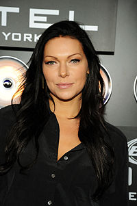
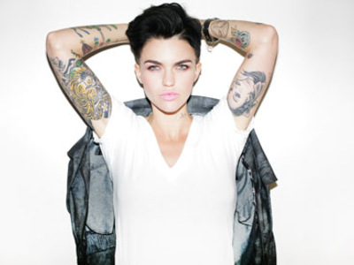
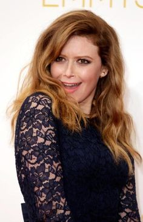
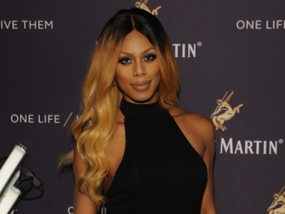

Ela é filha do promotor de justiça Robert Schilling e de Tish Schilling. Ela cresceu em West Roxbury e Wayland, dividindo o tempo entre os pais divorciados.
Ela se formou na Universidade Fordham em 2006, conseguindo um diploma de bacharel de artes na área de artes cênicas. Ela então entrou no programa de graduação da Universidade de Nova Iorque para continuar a estudar atuação, mas saiu após completar o segundo ano.
Carreira
Taylor Schilling, na série dramática de 2009 Mercy, interpretou a Enfermeira Veronica Callahan, que foi uma veterana da Guerra do Iraque, e é a personagem principal da série. Schilling leu o teste para o papel através do uso de um videotape enquanto estava morando na cidade de Nova Iorque. Liz Heldens, que é a produtora executiva da série, assim como seu marido, ficaram tão impressionados com a performance de Schilling que a fizeram viajar para Los Angeles para que ela fizesse o teste. Heldens disse que "ela simplesmente derrubou as portas da audição".
Schilling venceu o Prêmio de Melhor Performance do Festival dos Dramaturgos do Emerson College. Ela interpretou a protagonista Dagny Taggart no filme Atlas Shrugged, que é uma adaptação de 2011 da novela de mesmo nome de Ayn Rand. Schilling intrerpretou a protagonista no filme in The Lucky One, que também conta com a participação de Zac Efron. O filme lançado em 2012, é baseado na obra de mesmo nome de Nicholas Sparks.
Laura Prepon

Biografia
Laura Prepon (Watchung, 7 de março de 1980) é uma atriz estadunidense, conhecida pelo papel de Donna Pinciotti no seriado That '70s Show e como Hannah Daniels da série October Road. Atuou na série Are You There, Chelsea?, interpretando o papel título. Seu trabalho mais recente, e definitivamente o mais reconhecido, é na série Orange is the New Black, onde Prepon interpreta a ex-traficante Alex Vause.
Ruby Rose

Biografia
Ruby Rose é uma atriz, modelo e DJ australiana. Fez um grande sucesso por ter atuado em Orange is The New Black, como Stella, nasceu 20 de março de 1986 em Melbourne na Austrália, filiação: Katia Langenheim.
Natasha Lyonne

Biografia
Nasceu em Nova Iorque, filha de Yvette Lyonne,uma consultora de licenciamento de produtos, e Aaron Braunstein, um nativo de Brooklyn, que trabalhou como promotor de boxe. Lyonne cresceu em um lar de judeus ortodoxos em Israel, e viveu com sua família durante sua infância, seus avós maternos eram sobreviventes do Holocausto.Quando seus pais se divorciaram, Lyonne se mudou para Nova Iorque para viver com sua mãe e seu irmão, Adam, em um apartamento. Em Nova York, Loynne estudou na Ramaz Lyonne, uma escola particular judaica. Sua mãe se mudou para Miami, onde Lyonne formou-se na Miami Country Day School.
Carreira
Natasha Lyonne Lyonne é talvez mais conhecida por seus papéis nos dois primeiros American Pie como a rabugenta Jessica.Ela também apareceu em mais de 30 outros filmes, incluindo os papéis principais nos filmes independentes Slums of Beverly Hills e But I'm a Cheerleader. Lyonne também apareceu em Party Monster em 2003.
Lyonne está atualmente filmando a comédia de humor negro/terror All About Evil em San Francisco, assim como também esta atuando na série Orange Is The New Black, uma série original do Netflix, no papel de Nicky Nichols estreada em julho de 2013.
Laverne Cox

Biografia
Nasceu em 29 de maio de 1984 no Alabama,é uma atriz norte-americana e produtora de televisão. Laverne é mais conhecida pela personagem Sophia Burset, na série Orange Is the New Black, que lhe rendeu uma indicação ao Emmy Awards na categoria Melhor atriz convidada numa série de comédia. Laverne se tornou a primeira Trangenero Sexual a ser indicada a essa categoria.[4] [5] [6] [7] Cox nasceu em Mobile, Alabama. Ela tem um irmão gêmeo, M. Lamar, que retrata a pré-transição de Sophia (como Marcus) em OITNB. Ela é graduada da Escola de Belas Artes de Alabama em Birmingham, Alabama e Marymount Manhattan College em Nova Iorque, NI, onde começou a atuar.